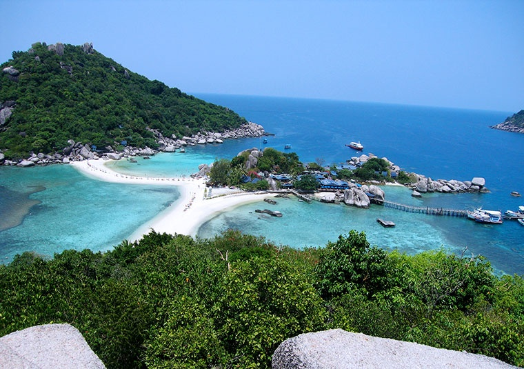
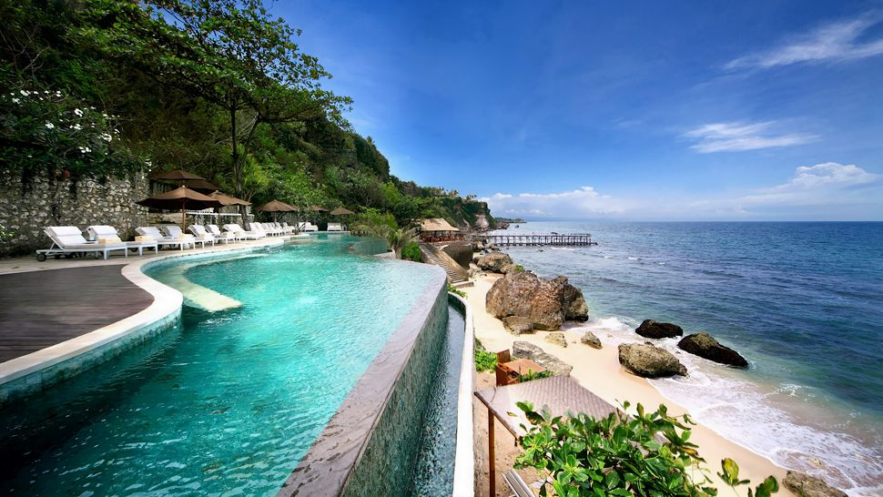
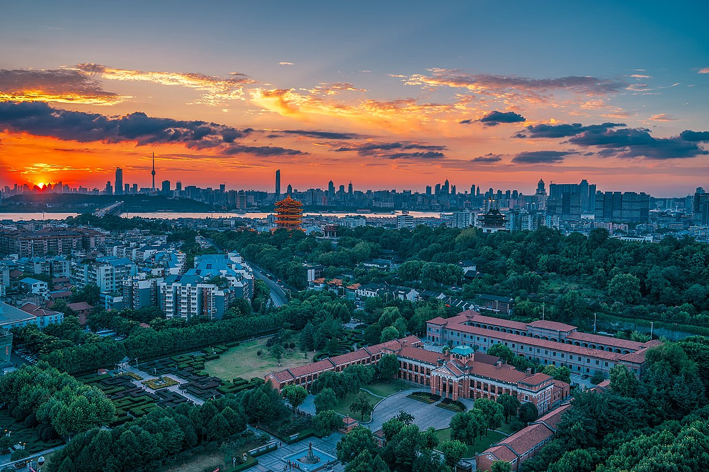

1. Ko Tao, Tajlandia
Ta mała tajska wyspa ma wiele do zaoferowania: dużo pięknych plaż i jest doskonałym miejscem do nurkowania - możesz zrobić przy okazji wyjazdu certyfikat nurkowania. Warto też pojeździć po wyspie i odkryć prawdziwą dżunglę. Jeśli chcesz połączyć wypoczynek na plaży i przygodę - to idealna podróż dla ciebie.
Jedź z biurem podróży.
2. Porto, Portugalia
Spacery brzegiem rzeki, degustacja win w porcie lub w Dolinie Douro połączona z rejsem statkiem, podziwianie widoków z mostu - tak smakuje właśnie urlop w Porto. Jako jedna z najstarszych turystycznych destynacji w Europie - to miasto wie, jak oczarować odwiedzających o każdej porze roku.

Jedź z biurem podróży.
3. Bali, Indonezja
Bali nazywane jest "wyspą bogów" i nie bez powodu. Na wyspie jest dużo świątyń, pięknych gór i malowniczych krajobrazów. Nie dziwi więc jej popularność wśród turystów. Jedną z najciekawszych miejscówek jest świątynia Pura Luhur Uluwatu położoną na klifie, z której widać Ocean Indyjski.
Jedź z biurem podróży.
4. Santorini, Grecja
Dlaczego warto tam pojechać? Dla zachodów słońca i białych domów z niebieskimi dachami. Zajrzyj też na plaże z czerwonym i czarnym piaskiem oraz do okolicznych winiarni.
Jedź z biurem podróży.
5. Wuhan, China
idealne miejsce na emocjonujące wakacje, jeśli lubisz ryzyko i masz mało pieniędzy to miejsce w sam raz dla ciebie. podróż po okolicznych wioskach zapewni ci koronawirusa, a razem z tym okazję by zwiedzić lokalne szpitale.
Bióro podróży Cię tam nie zawiezie.